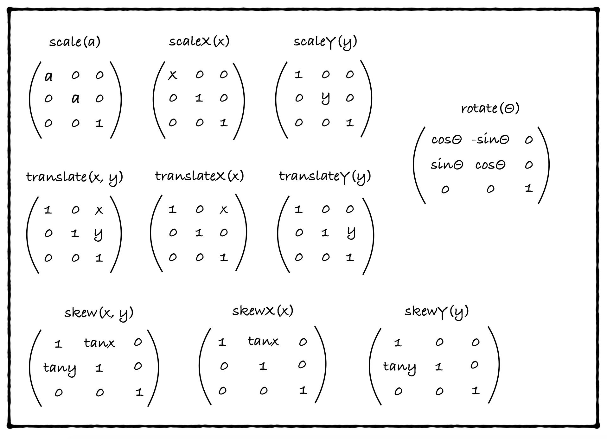
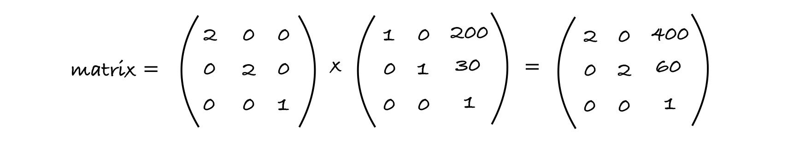
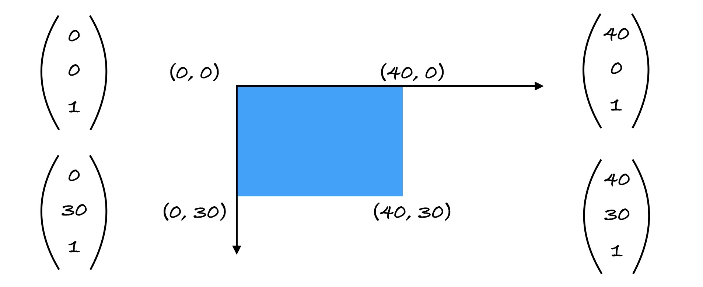
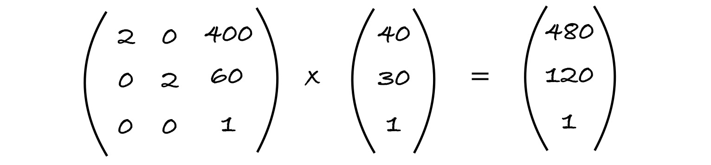

关于 transform
文章目录
其实就是用scale实现缩放的时候，想修改他的translateX和translateY来做一些拖拽的操作时，发现计算出来的距离都会受到缩放比例的影响，就小小的研究一下是什么鬼哦。
首先要知道的是transform不是直接修改元素的尺寸，而是会给目标元素创建一个局部坐标，可以看下这篇文章，大致意思是transform之后拿元素的offsetWidth和offsetHeight都还是原来的值，不过用getBoundingClientRect可以拿到transform后的。
如这个例子
|
|
当使用第 1 行的设置方法时会发现结果并不理想。那问题来了，为什么要除以scale呢！
具体的 transform 大致对应矩阵中的这些项：

这些项相乘得到一个 matrix 矩阵，原元素的四角坐标经过 matrix 变换(矩阵相乘)，从而得到变换后的四角坐标。
那么 matrix 是怎么算出来的呢！比如
|
|

当前的 matrix 是
$$ \begin{pmatrix} 2 & 0 & 400 \newline 0 & 2 & 60 \newline 0 & 0 & 1 \end{pmatrix} $$
2D 矩阵的对应 matrix：matrix(2, 0, 0, 2, 400, 60)。
那么坐标系怎么运用这个变换呢！比如一个这样的元素：

四个角坐标分别与 matrix 相乘会得到最终在坐标系中的位置（以(40, 30)为例）：

最后的坐标会是(400, 60)，(480, 60)，(480, 120)，(400, 120)。
会发现其实 CSS 中transform属性的scale和translate针对的就是matrix的第 1、4、5 和 6 项，其中 1、4 对应的是对角线上的scale，5 和 6 分别对应translate的距离，当放大了一倍之后在坐标系中的移动的距离(400, 60)会是原来transform: translate(200, 30)的 2 倍。所以如果当缩放过后针对当前元素使用translate都是需要除以缩放比例的，不想除的话就可以用transform: matrix~~
参考资料
文章作者 youting
上次更新 2020-01-06